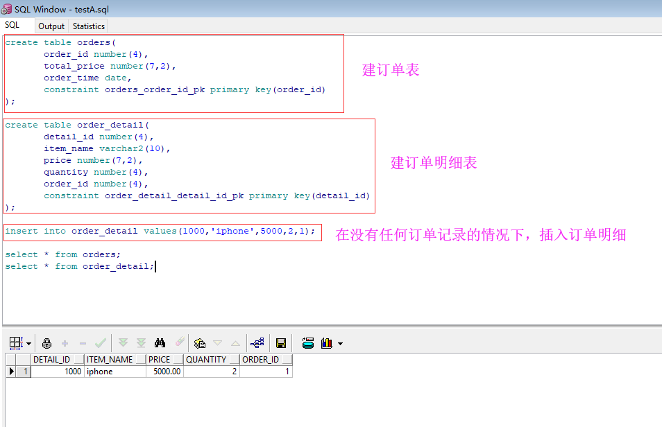
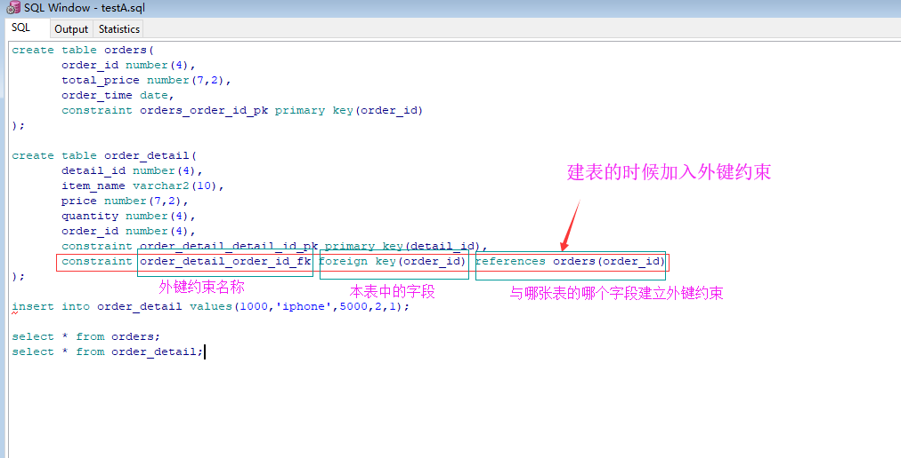

为什么要有外键约束？
先来举个栗子，以这个栗子出现的问题来引出外键约束
建两张表，分别为订单表和订单明细表，并且在没有任何订单记录的情况下插入订单明细记录

这时候，没有任何订单记录的情况下插入的这一条订单明细记录就是脏数据了
引出外键约束
通过上面的栗子，我们就有这么一个需求：我们希望在有关联的两张表之间（如上面栗子中的订单表和订单明细表），B表数据存在的前提是A表中对应的数据已经存在
通过外键约束我们就可以实现上面的需求了，其实外键约束最主要的功能就是保证数据的完整性的

这时候我们如果在订单表中没有相应记录（订单表的order_id字段值与order_detail字段值对不上）的时候，插入订单明细表记录就会报错了
外键约束有哪些约束？
约束一：订单表中没有相应记录（订单表的order_id字段值与order_detail字段值对不上）的时候，插入订单明细表记录就会报错了
约束二：删除订单表记录的时候，如果订单明细表存在与之对应的记录，则无法删除，要先删掉订单明细表中的记录
约束三：drop订单表的时候必须先drop订单明细表